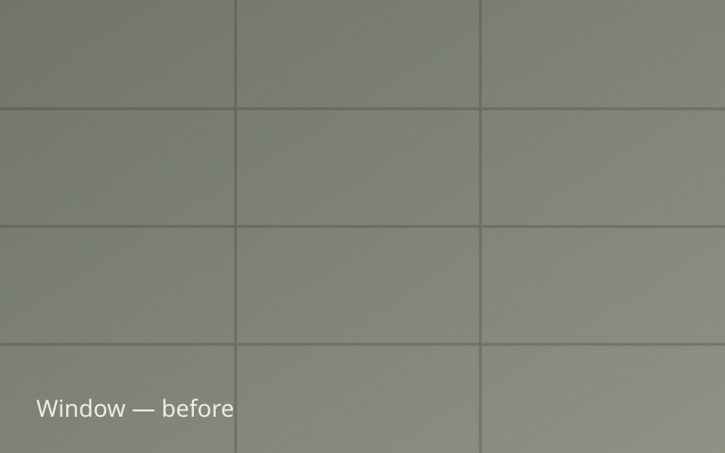
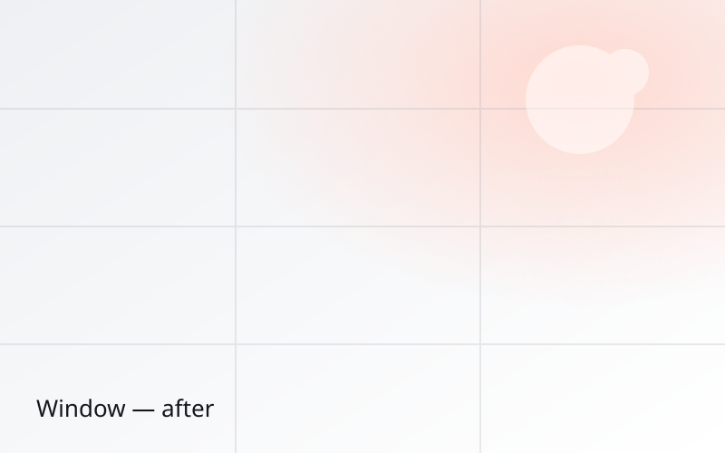

Window Cleaning in Delano & the Western Metro
Crystal-clear, streak-free windows that flood your home with light — inside, outside, screens, sills, and tracks.
- Licensed & insured
- Satisfaction guaranteed
- 4.9★ rated
Free Window Cleaning Quote
No-obligation, same-day pricing. Takes 60 seconds.
Thank you! Your request is in.
A friendly Barta team member will reach out shortly — usually within a few hours during business hours — with your free, no-obligation quote.
Or call us now: (763) 555-0142Professional window cleaning, done right
Windows are the first thing guests notice and the last thing most homeowners have time to clean. Barta's window cleaning service brings back that just-built sparkle — without ladders in your flower beds or streaks in the afternoon sun. We hand-detail interior glass, use pure-water poles for exterior panes up high, and finish every screen, sill, and track so the whole window looks new.
Most homes are completed in 2–4 hours with a two-person crew.


Before AfterThe benefits you'll notice
Streak-free guarantee
We don't leave until every pane is spotless — or we come back free.
Inside & out
Glass, frames, screens, sills, and tracks are detailed on every visit.
Pure-water technology
Deionized water rinses glass cleaner and keeps it clearer, longer.
Hard-water removal
We treat mineral spots and stains traditional cleaning leaves behind.

Every window cleaning includes
- Interior & exterior glass hand-cleaned and squeegeed
- Window screens removed, washed, and reinstalled
- Sills, tracks, and frames wiped down
- Pure-water pole cleaning for second-story and hard-to-reach glass
- Spot treatment for light hard-water and mineral marks
- Full cleanup — we leave your home tidier than we found it
What customers say
“The crew was on time, polite, and unbelievably thorough. Our windows haven't looked this clear since the house was built. The before-and-after is honestly shocking.”
“Barta cleaned years of black streaks off our roof and washed the whole house in an afternoon. Neighbors keep asking if we got new siding. Worth every penny.”
“I'm on the Crystal Plus plan and it's the best home decision we've made. They just show up on schedule and everything stays spotless. Zero hassle.”
Window Cleaning FAQs
How much does window cleaning cost in Delano?
How often should I schedule window cleaning?
Are you licensed and insured?
Do you guarantee your work?
You may also need
Gutter Cleaning
Hand-cleared gutters and downspouts that protect your foundation, roof, and siding.
Learn morePressure Washing
Restore driveways, patios, walkways, and decks to like-new with controlled high-pressure cleaning.
Learn moreHouse Washing
Gentle, thorough exterior washing that removes algae, mildew, and dirt from siding.
Learn moreReady for spotless results?
Get your free, no-obligation window cleaning quote today and see why Delano trusts Barta.